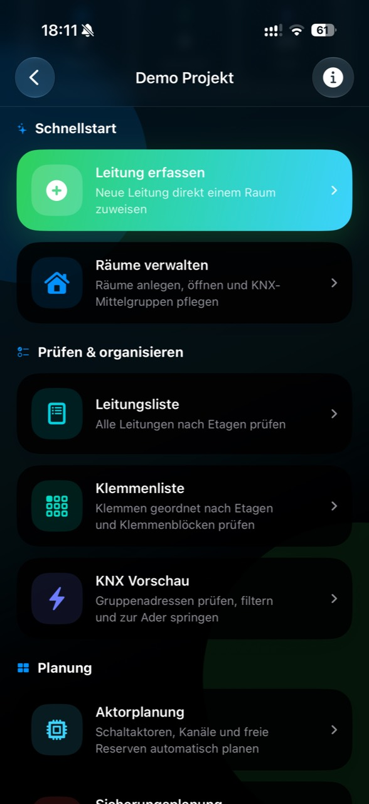
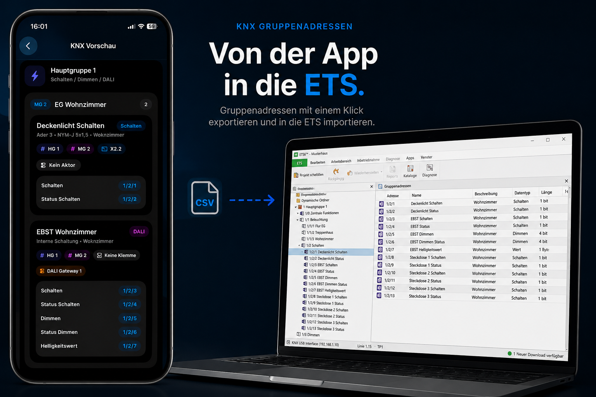

Projekt strukturieren
Etagen, Räume, Leitungen, Verbraucher und Aderfunktionen direkt vor Ort sauber aufnehmen.
Räume, Leitungen und Adern einmal erfassen. WireLogic macht daraus Klemmenlisten, KNX-Gruppenadressen und eine saubere Projektdokumentation.

WireLogic verbindet Baustellenaufnahme, Planung und Dokumentation – ohne dieselben Daten in mehreren Programmen neu einzutragen.
Etagen, Räume, Leitungen, Verbraucher und Aderfunktionen direkt vor Ort sauber aufnehmen.
Klemmstellen, KNX-Gruppenadressen, Aktorkanäle und Sicherungen aus den Projektdaten erzeugen.
PDF-Dokumentation, ETS-Gruppenadressen und Projektdateien für die weitere Arbeit bereitstellen.

WireLogic nutzt die Daten, die ohnehin auf der Baustelle entstehen, und bereitet daraus eine nachvollziehbare KNX-Struktur vor.
Die App führt Schritt für Schritt durch die Erfassung. So bleibt das Projekt auch dann übersichtlich, wenn aus wenigen Räumen hunderte Leitungen und Funktionen werden.
Projektinformationen, Kabellisten und technische Zuordnungen werden zu einer konsistenten Ausgabe zusammengeführt. Firmenangaben und Logo machen daraus eine professionelle Projektdokumentation.

Teste WireLogic kostenlos über TestFlight und hilf mit deinem Baustellen-Feedback, die App noch besser zu machen.